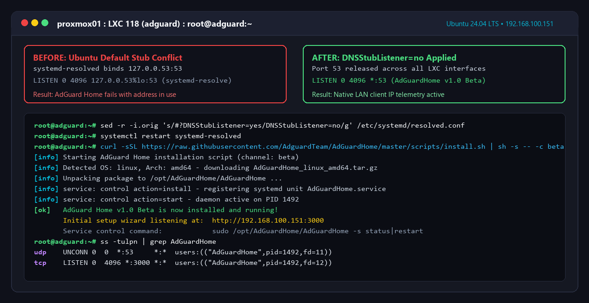
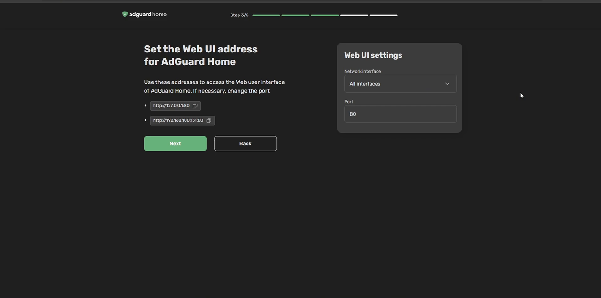
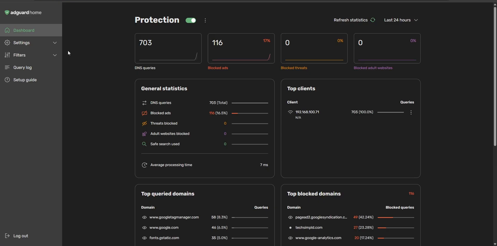
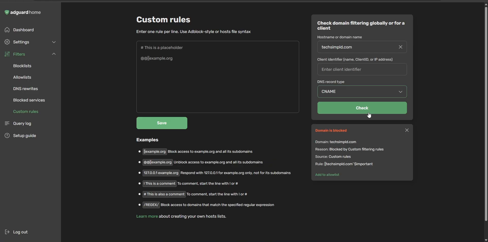
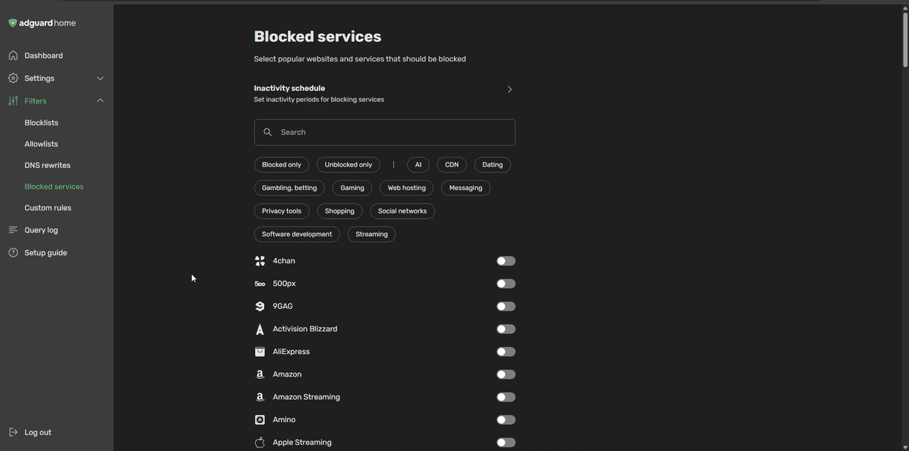
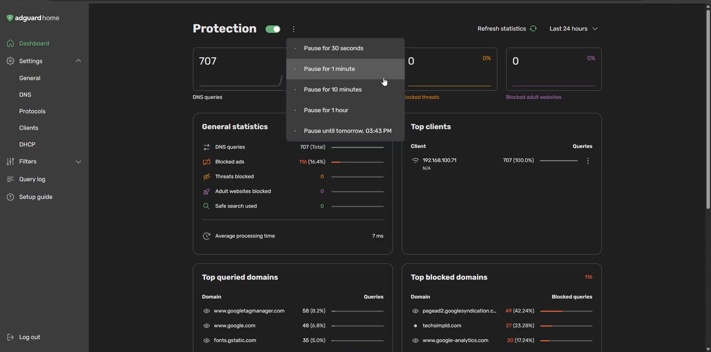

AdGuard Home 1.0 Beta: Complete Ubuntu LXC Setup Guide & Walkthrough

AdGuard Home has officially dropped its long-awaited v1.0 Beta, bringing a complete user interface redesign, modernized DNS query handling, and granular privacy controls. If you have been looking to upgrade your home network's ad-blocking infrastructure or want to explore the new 1.0 features before they hit the stable channel, deploying it bare-metal inside an Ubuntu Linux Container (LXC) on Proxmox VE is the cleanest, most resource-efficient method available.
An Ubuntu LXC container uses almost zero idle RAM (typically between 25MB and 45MB) and boots in under two seconds. Unlike Docker installations where bridge networking can obscure individual client IP addresses behind a gateway NAT, an LXC container shares the Linux kernel directly while providing a dedicated static IP address on your local subnet.
In this step-by-step walkthrough, we will provision a clean Ubuntu container, resolve Ubuntu's notorious systemd-resolved port 53 conflict, run the official automated beta installer, complete the web configuration wizard, test live client ad-blocking, and explore new 1.0 features including one-click service blocking and timed protection pauses.
flowchart LR
subgraph Clients ["Local Network Clients"]
PC["Debian Workstation\n(192.168.100.10)"]
Phone["Mobile Devices\n(DHCP Pool)"]
IoT["Smart TV & IoT\n(Isolated VLAN)"]
end
subgraph LXC ["Proxmox Ubuntu LXC (:53)"]
DNSStub["systemd-resolved\n(Stub Disabled)"]
AGH["AdGuard Home 1.0 Beta\nCore Filtering Engine"]
Blocklists[("Adlists & Custom Rules\nBlocked Services")]
end
subgraph Upstream ["Encrypted Upstream Resolvers"]
CF["Cloudflare DNS\n(1.1.1.1 over DoH)"]
Quad9["Quad9 DNS\n(9.9.9.9 over DoT)"]
end
PC -->|DNS Query :53| AGH
Phone -->|DNS Query :53| AGH
IoT -->|DNS Query :53| AGH
AGH <--> Blocklists
AGH -- "Ad / Tracker Match" --> Sinkhole["Sinkhole Response\n(0.0.0.0 / NXDOMAIN)"]
AGH -- "Clean Query" --> CF
AGH -- "Clean Query" --> Quad9
classDef lxcBox fill:#0f111a,stroke:#8b5cf6,stroke-width:2px,color:#f8fafc;
classDef clientBox fill:#1e293b,stroke:#06b6d4,stroke-width:1.5px,color:#f8fafc;
classDef upstreamBox fill:#152033,stroke:#facc15,stroke-width:1.5px,color:#f8fafc;
class LXC,AGH,DNSStub,Blocklists lxcBox;
class Clients,PC,Phone,IoT clientBox;
class Upstream,CF,Quad9 upstreamBox;
Why Deploy AdGuard Home in an LXC Container?
When self-hosting network-critical services like DNS resolvers, DHCP servers, or NTP daemons, simplicity and reliability trump complex multi-layer abstractions. While containerizing with Docker is convenient for web apps, running a DNS sinkhole inside Docker introduces common pitfalls:
- Port 53 Binding Conflicts: Docker bridge networks require exposing ports
53:53/tcpand53:53/udp, frequently colliding with host resolver daemons. - Obscured Client Telemetry: In standard bridge mode, Docker masquerades inbound network traffic, causing all queries in your AdGuard dashboard to appear as though they originated from the Docker host gateway (e.g.
172.17.0.1) rather than your actual phones, PCs, or TVs. - Resource Efficiency: A Proxmox LXC container has no hypervisor virtualization overhead, consumes less than 50MB of RAM, and can be backed up instantaneously via Proxmox Backup Server (PBS).
When creating your Ubuntu LXC container in Proxmox, allocate 1 vCPU core, 512MB RAM (AdGuard will use a fraction of this), and 8GB disk space. Assign a static IP address outside your router's dynamic DHCP pool (for example, 192.168.100.151/24). Use our Subnet & IP Calculator to plan clean IP boundaries.
Step 1: Container Preparation & Port 53 Conflict Resolution
Start your Ubuntu LXC container and open a terminal shell. First, ensure your operating system package lists are up to date and that curl is installed:
# Update local repository caches and upgrade existing packages
apt update && apt upgrade -y
# Ensure curl and nano are installed
apt install -y curl nanoThe Port 53 Gotcha: Disabling systemd-resolved DNS Stub
In Ubuntu 22.04 and 24.04 LTS, the default system resolver is systemd-resolved. By default, it runs an internal DNS stub listener bound to 127.0.0.53:53. Because AdGuard Home must bind to port 53 across all network interfaces (0.0.0.0:53) to receive DNS queries from your entire LAN, AdGuard will fail to start if the stub listener remains active.
To disable the stub listener cleanly without breaking the container's outbound DNS resolution during installation, execute this single regex replacement command:
# Disable DNSStubListener in systemd-resolved configuration
sed -r -i.orig 's/#?DNSStubListener=yes/DNSStubListener=no/g' /etc/systemd/resolved.conf
# Restart systemd-resolved to apply the changes
systemctl restart systemd-resolved
To verify that port 53 is now completely free, run ss -tulpn | grep :53. If the output returns empty, port 53 is clear and ready for AdGuard Home.
Step 2: Installing AdGuard Home 1.0 Beta
The AdGuard development team maintains an official automated installation script for Linux systems. To instruct the installer to fetch the v1.0 Beta channel instead of the legacy stable branch, pass the -c beta flag:
# Download and execute the official AdGuard Home 1.0 Beta installer
curl -s -S -L https://raw.githubusercontent.com/AdguardTeam/AdGuardHome/master/scripts/install.sh | sh -s -- -c beta -v
The script automatically detects your system architecture (x86_64 or ARM64), downloads the latest 1.0 Beta binaries, extracts them to /opt/AdGuardHome, and creates an active systemd service (AdGuardHome.service).
You can verify that the daemon is actively running with:
systemctl status AdGuardHome

Step 3: Initial Web Setup Wizard (Port 3000)
Once the installation finishes, open your web browser and navigate to your container's IP address on port 3000:
http://YOUR_CONTAINER_IP:3000 (e.g., http://192.168.100.151:3000)
- Welcome Screen: Click the initial setup button on the welcome screen to launch the configuration wizard.
- Admin Web Interface: Set the web management portal to listen on All interfaces on Port 80 (or 8080 if port 80 is occupied).
- DNS Server Port: Set the DNS server to listen on All interfaces on Port 53. Because we disabled the systemd stub listener in Step 1, this validation passes instantly with a green checkmark.
- Authentication: Create a strong administrator username (e.g.,
techsimpld) and a secure password. Accept the privacy policy and click Next. - Device Configuration Overview: AdGuard displays instructions for configuring routers and endpoints. Click Next and then Open Dashboard.
Notice that the setup wizard automatically drops the initial port 3000 binding. You will now be redirected to the main dashboard listening directly on clean HTTP port 80:
http://YOUR_CONTAINER_IP/

Step 4: Pointing Clients & Verifying Live Query Filtering
Before changing your entire home router's DHCP settings, it is best practice to test DNS resolution on a single client device.
Configuring a Linux / Debian Client
- Open Network Settings on your test workstation.
- Navigate to Wired / Wi-Fi Settings → IPv4.
- Turn off Automatic DNS and enter your AdGuard Home container's static IP (e.g.,
192.168.100.151). - Click Apply. Disconnect and reconnect the network adapter to flush existing DNS resolver caches.
Testing Live Filtering & Ad Sinkholing
Open a browser window on the client and load several websites. Return to your AdGuard Home dashboard and click Refresh Statistics. You will immediately see live metrics populating:
- DNS Queries: Total requests processed by the server.
- Blocked by Filters: Percentage of ad telemetry, tracking beacons, and analytics requests blocked.
- Blocked Malware / Phishing: Harmful domains intercepted.
- Average Processing Time: Query response time in milliseconds (typically under 10ms for cached records).

To prove that filtering is functioning end-to-end, go to Filters → Custom filtering rules. Add a test rule:
||techsimpld.com^
Click Save. Open an incognito/private browser tab on your client and attempt to navigate to techsimpld.com. The browser will immediately fail to resolve the domain. Remove the test rule when finished!

Exploring New AdGuard Home 1.0 Beta Features
The 1.0 Beta release represents the most significant architectural refresh in AdGuard Home's history. Here are the flagship capabilities highlighted in our video walkthrough:
1. One-Click Blocked Services
Previously, blocking popular cloud platforms or social media apps required finding community regex lists. In v1.0 Beta, navigate to Filters → Blocked services. You will find intuitive toggle switches to instantly block entire ecosystems:
- Social & Streaming: TikTok, Bluesky, Discord, YouTube, Netflix, Twitch, Steam.
- AI Platforms: ChatGPT, Claude, OpenAI APIs, Copilot.
- Cloud Storage: Box, Dropbox, OneDrive.

2. Advanced Browsing Security & Parental Controls
Under Settings → General settings, enable two critical protection layers that are disabled by default:
- Browsing Security: Uses AdGuard's cloud database to inspect requested domain reputations and block phishing sites and known malware distribution nodes.
- Parental Control: Blocks access to adult websites, violent content, and explicit search engine results using automated domain classification.
3. Timed Protection Pauses
One of the most practical additions in v1.0 is the Timed Protection Pause. In previous releases, turning off protection required remembering to turn it back on later. In the 1.0 dashboard header, click the three dots next to the Protection toggle to pause ad filtering for:
- 30 Seconds / 1 Minute: Quick site verification.
- 10 Minutes / 1 Hour: Guest network testing or troubleshooting a broken checkout portal.
- Until Tomorrow: Extended temporary exemption.
AdGuard continues resolving all network DNS queries without disruption while temporarily suspending blocklist enforcement, and automatically re-engages protection when the countdown timer expires.

Recommended Upstream Encrypted DNS (DoH / DoT)
By default, AdGuard Home forwards unblocked requests to standard plaintext DNS resolvers provided by your ISP. To prevent your internet service provider from snooping on your browsing habits, configure encrypted upstream DNS under Settings → DNS settings:
# High-Performance Encrypted Upstream DNS Resolvers
https://dns.cloudflare.com/dns-query
tls://dns.quad9.net
https://dns.google/dns-query
tls://unfiltered.adguard-dns.comSelect Parallel requests mode. AdGuard will query all configured upstream resolvers simultaneously and return whichever response resolves fastest, optimizing your network latency while securing all traffic in transit.
AdGuard Home vs. Pi-hole: Key 2026 Differences
| Feature | AdGuard Home 1.0 Beta | Pi-hole v5 / v6 |
|---|---|---|
| Encrypted DNS (DoH/DoT) | Built-in natively without extra software | Requires third-party proxy (cloudflared / unbound) |
| Service Blocking | One-click toggle presets for 50+ services | Manual regex & group domain management |
| Timed Pause | Native presets (30s to 24h) | Basic custom duration prompt |
| Architecture | Single compiled Go binary | FTL C-engine + PHP / lighttpd web server |
Common Pitfalls & Troubleshooting
- Broken Web Browsing on Client: If a client device cannot browse the web after changing DNS, check whether your upstream DNS resolvers are accessible. In AdGuard Home under DNS settings, click the Test Upstreams button.
- Port 53 Still Bound: If AdGuard fails on reboot with
bind: address already in use, verify that/etc/systemd/resolved.confretainedDNSStubListener=no. Also check if another package likednsmasqwas installed unintentionally. - Container Static IP Changes: Ensure your Proxmox container has a static IP defined in the container's Network tab rather than relying on DHCP from your primary router.
Frequently Asked Questions
Why is port 53 already in use when installing AdGuard Home on Ubuntu?
Ubuntu runs systemd-resolved by default, binding a local stub resolver to 127.0.0.53:53. Setting DNSStubListener=no in /etc/systemd/resolved.conf and restarting the daemon frees port 53 across all interfaces so AdGuard can listen for network traffic.
Is running AdGuard Home in an LXC container better than Docker?
Yes. An LXC container on Proxmox VE boots in sub-seconds, uses less than 45MB of RAM, and maps directly to your physical network subnet without Docker NAT bridge address translation. This ensures that every individual client IP is logged accurately in your audit queries.
Can I run AdGuard Home 1.0 Beta alongside an existing Pi-hole?
Yes. You can assign AdGuard Home its own static IP address and test it on individual workstations before changing your router's primary DHCP options. Many home lab builders maintain both for redundant failover.
Key Takeaways & Next Steps
Deploying AdGuard Home 1.0 Beta in an Ubuntu LXC container gives you an ultra-fast, modern ad and malware blocking foundation for your entire household. With single-click service blocking, native DoH/DoT upstream encryption, and timed protection pauses, managing network privacy has never been simpler.
Explore our companion guides and web utilities to build out your homelab:
- Generate clean compose stacks with our Docker Compose & .env Generator.
- Plan your home lab network boundaries using the Subnet & IP Calculator.
- Secure your external connections with our Cloudflare Zero Trust Tunnel Setup.